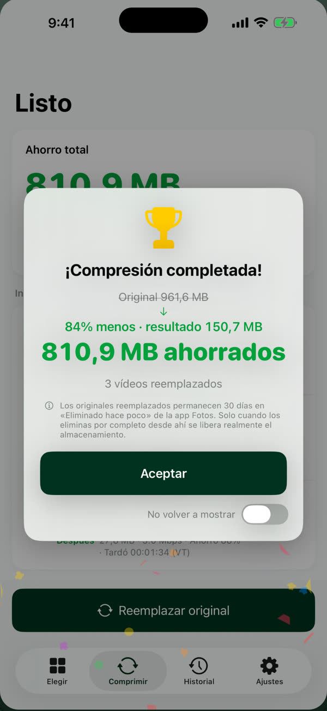
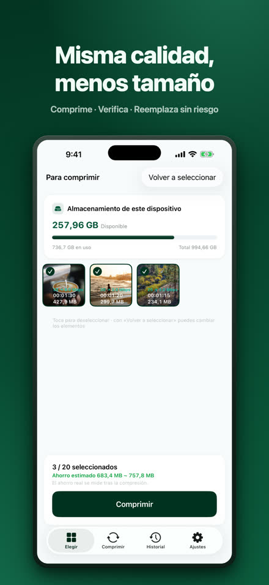
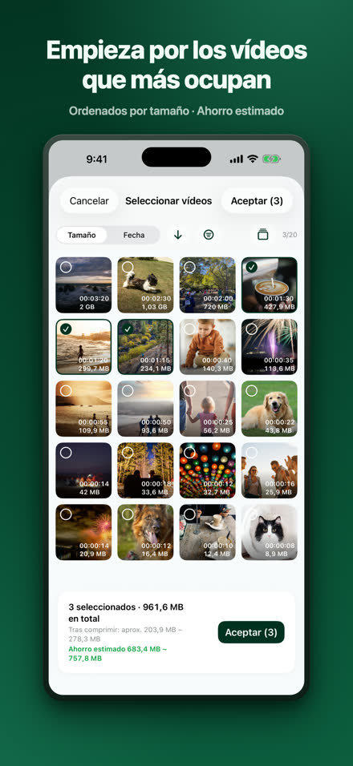
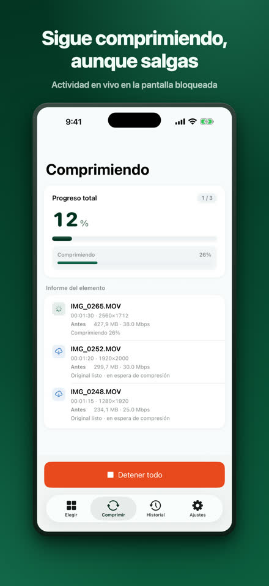
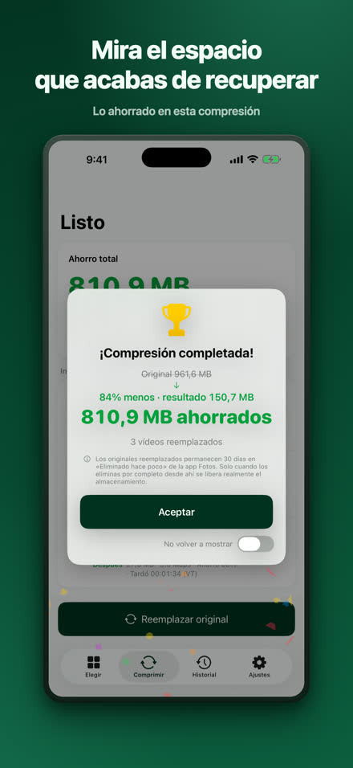
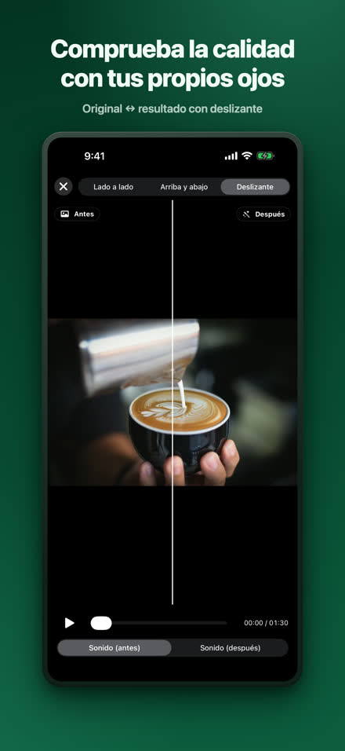
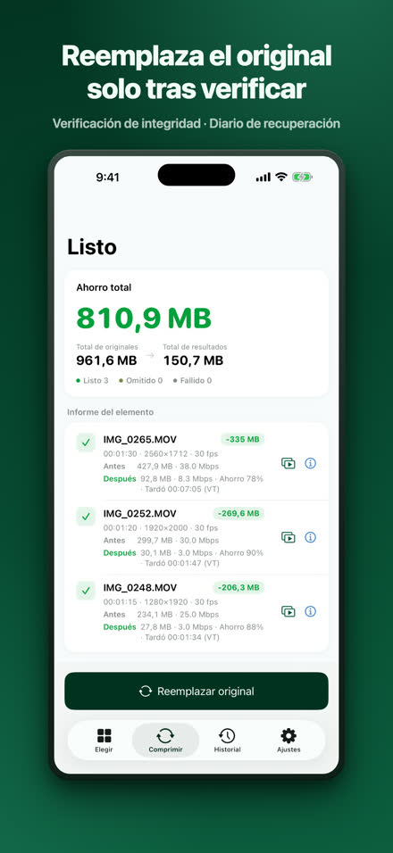
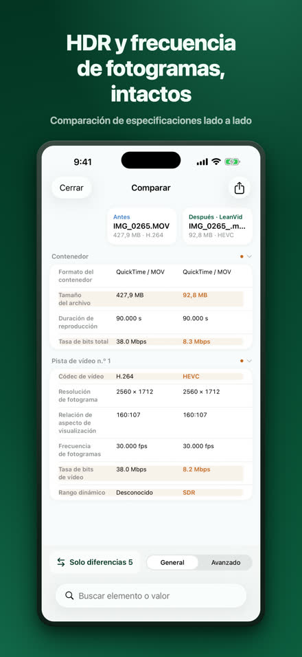
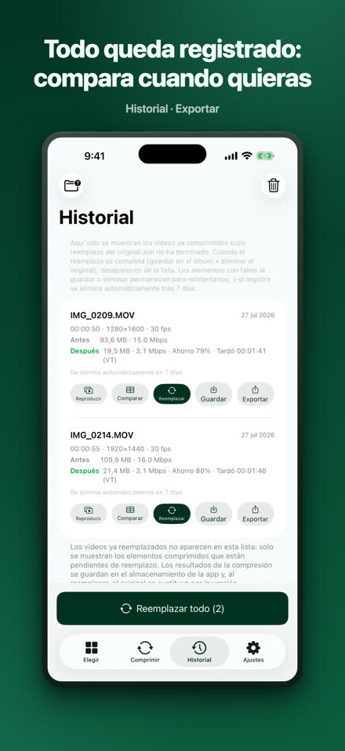

Reduce tus vídeos sin perder calidad.
LeanVid comprime los vídeos de tu fototeca y de la app Archivos bajando solo la tasa de bits: la resolución, la frecuencia de fotogramas, el color y el HDR se mantienen intactos. Cada resultado se verifica antes de sustituir el original, y los originales de la fototeca se pueden recuperar durante 30 días.
Descárgalo en el App StoreiOS 18 o posterior · iPhone y iPad (también funciona en Mac con Apple silicon como app para iPad)

El mismo vídeo, en una fracción del espacio.
Prueba propia: una grabación de pantalla de 3 min 34 s. El resultado varía según el vídeo.
Elige, comprime, comprueba y reemplaza.








Todo lo que necesitas, incluido.
solo el bitrate; se conservan el HDR y todas las pistas
comprobaciones de integridad, registro de recuperación y confirmación del sistema
comparación en paralelo y con control deslizante, tabla de especificaciones completa
elige vídeos de En mi iPhone o iCloud Drive; los archivos MKV, WebM, AVI, WMV, FLV, TS, MPG y VOB se convierten a HEVC/MP4 en tu dispositivo
compresión en segundo plano con progreso en Live Activity (iOS 26 o posterior); en versiones anteriores se reanuda automáticamente al volver a la app
tus vídeos se comprimen en tu iPhone y no se suben a ningún sitio; no requiere cuenta — Privacidad